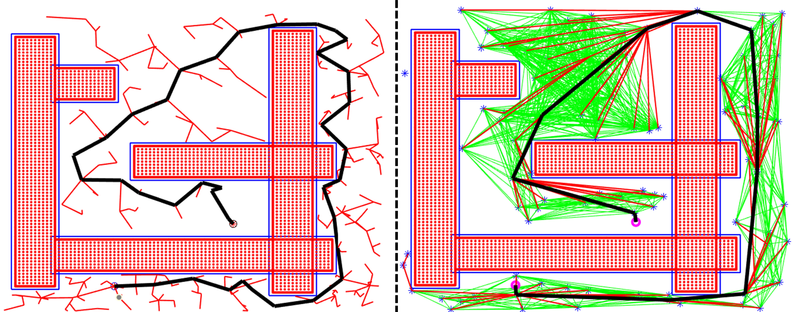
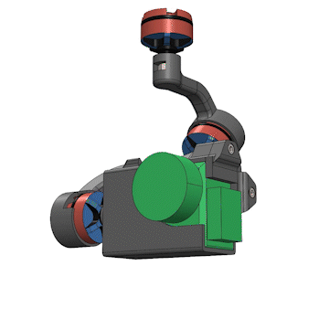
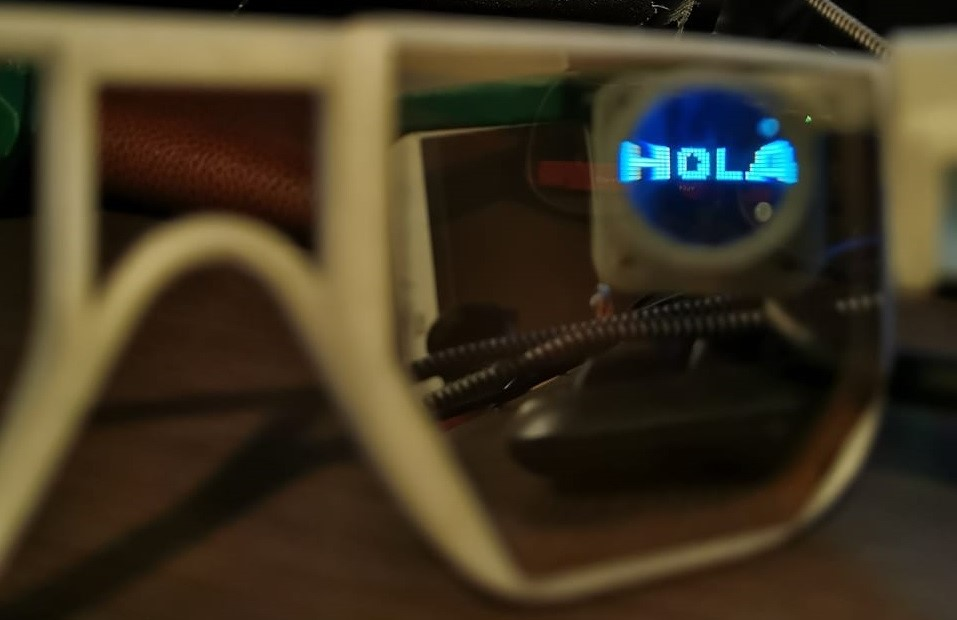
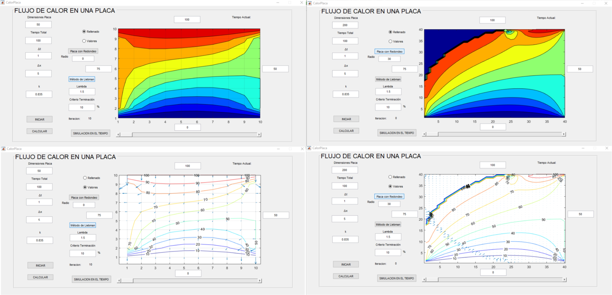

The project consists of a low-cost, scaled autonomous robot that navigates through a warehouse-like environment to collect products while avoiding obstacles. The robot uses a pre-established map of the environment and calculates a visibility graph to determine the free-obstacle areas. When an order is placed through a website, the robot uses the A* algorithm to find the optimal path that passes through all the positions of the products. The robot uses a local planner based on virtual potential fields to avoid collision with dynamic obstacles not on the predefined map.

Developed a MATLAB program that generated the UR5 arm trajectory for Jenga tower assembly at a designated location using CoppeliaSim to simulate. To achieve this, I applied advanced mathematical techniques, such as matrix exponentials, matrix logarithms, and numeric inverse kinematics, to plan trajectories and control the arm's movements. The arm could autonomously assemble Jenga towers in positions and heights chosen by the users.

Developed and implemented a simulation in MATLAB that utilized Rapidly-exploring Random Trees* (RRT*) and Probabilistic Roadmaps* (PRM*) algorithms to generate collision-free paths in obstacle-filled environments. The RRT* algorithm generated a single optimal path by exploring the configuration space, while the PRM* algorithm precomputed a roadmap of the configuration space and then found the optimal path using A* search. The simulation included visualizations of the path planning process and allowed users to adjust various parameters to explore the trade-offs between path quality and computational efficiency.

During my internship at Aeroseed Sky, I designed a gimbal camera control system for a crop surveillance drone. Used SolidWorks for detailed CAD designs and FEA simulations. Developed a 3DoF kinematic model and implemented a PID controller to stabilize and control camera angles, minimizing image vibrations.

Developed a smart glasses prototype that utilizes sound pattern recognition through the SOPARE system to display spoken words as text for individuals with hearing impairments. The glasses frame was designed using SolidWorks and integrated with a text projection system that adjusts the focal point using a convex lens for a clear text display. The project aims to provide a teleprompter-like experience for those with hearing impairments, allowing them to read translated conversations displayed on their glasses.

Conducted research on applying numerical methods to solve the Laplace heat equation for rectangular plates and plates with round corners. I utilized the Liebman method to calculate heat distribution in a steady state, and the Alternating-Direction Implicit (ADI) method was used to compute heat distribution in a transitory state. I applied these methods to a MATLAB program to visualize the results.